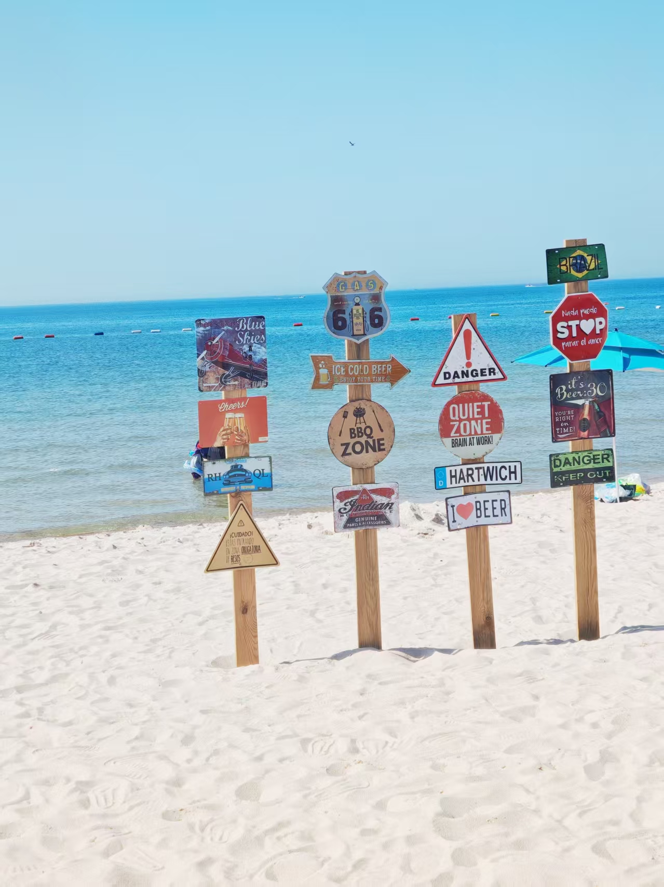
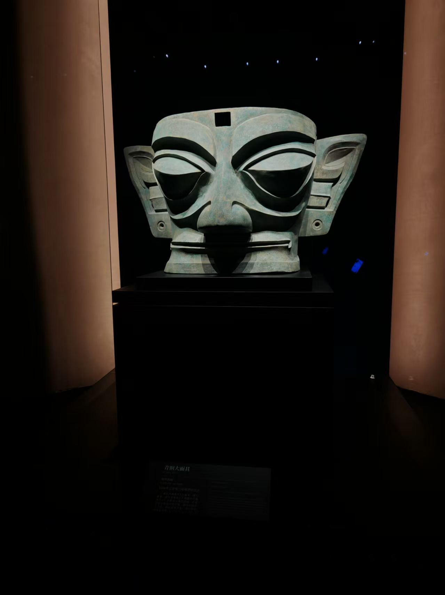
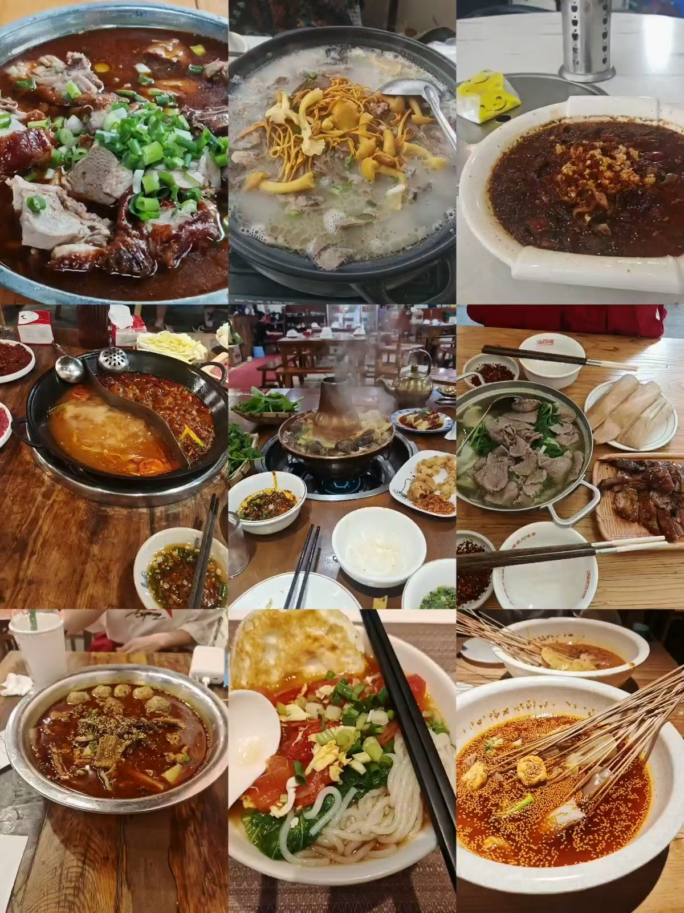
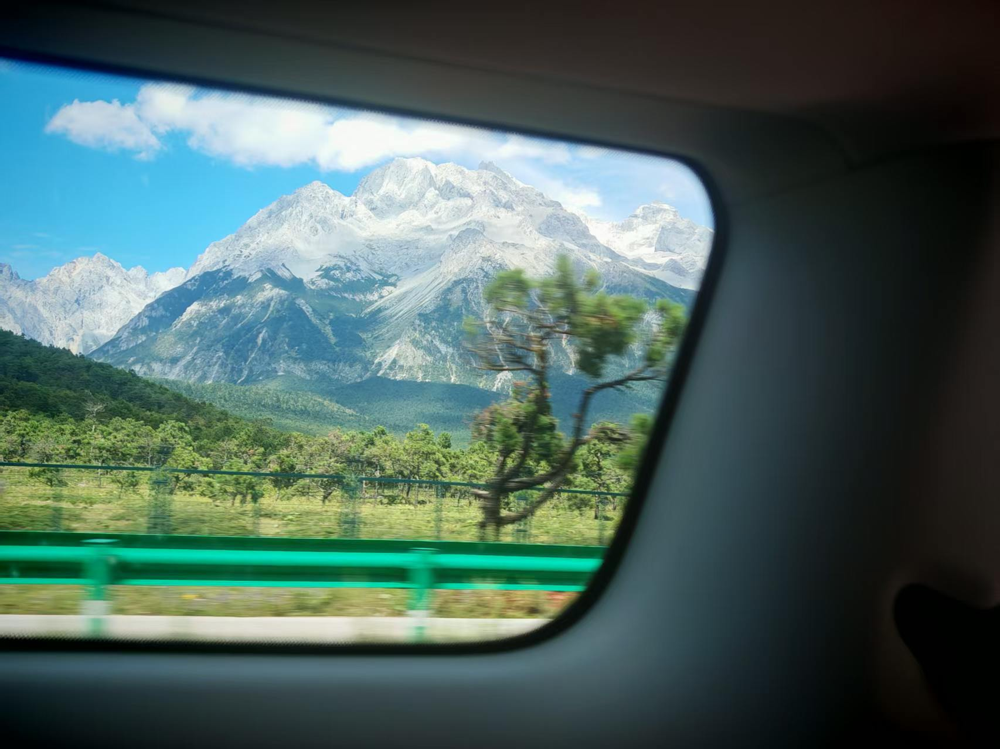
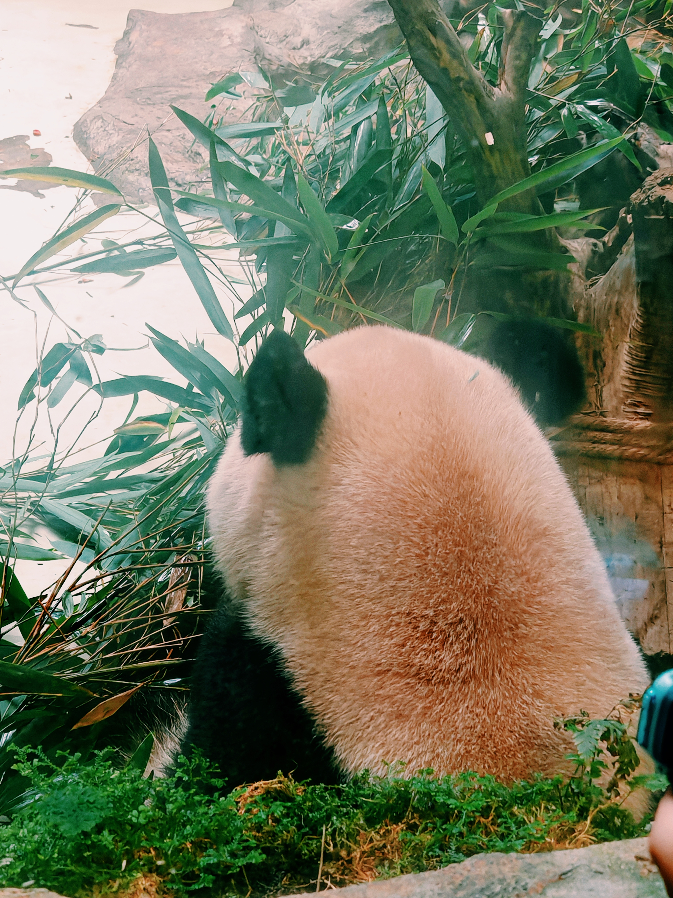
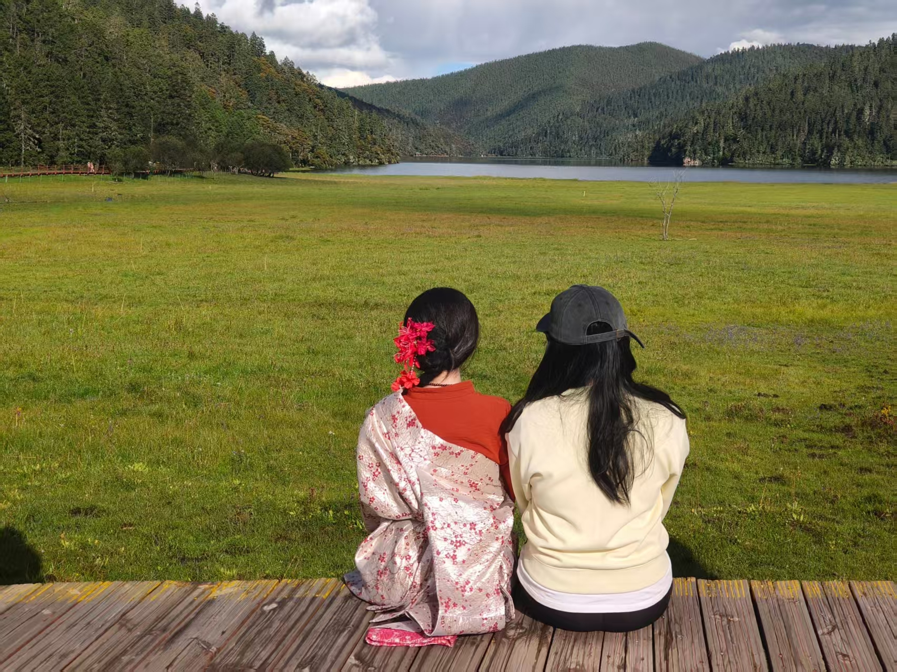

EXHIBIT 001
海边的小村落
雨后的村庄成了那次旅行最清晰的记忆。
每一段旅程，都是被收藏起来的展品。这里展出的不只是风景，还有旅途的心情、偶然遇见的人，以及那些过了很久还是闪闪发光的瞬间。

这座博物馆没有固定的参观路线。你可以从一张你喜欢的照片开始，每件展品都留有一块说明牌，记录地点、时间，以及我想留住的那一点感受。
SELECTED MOMENTS
点击任意展品，打开详细档案
雨后的村庄成了那次旅行最清晰的记忆。

EXHIBIT 002历史原来可以这样真实而震撼。

EXHIBIT 003美食也承载着旅游的乐趣。

EXHIBIT 004挑战的不只是高度，也是自己。

EXHIBIT 005旅行中接触自然和生命。

EXHIBIT 006好风景是身边有陪自己一起看风景的人。
我喜欢旅行。旅行就是把自己放进了一个完全陌生的城市，我只是我自己。我们对城市的爱慕，让我们用脚丈量，用心感受。旅行是在离开熟悉的地方以后，能看见世界，也能看见自己。
END OF EXHIBITION · UNTIL THE NEXT JOURNEY